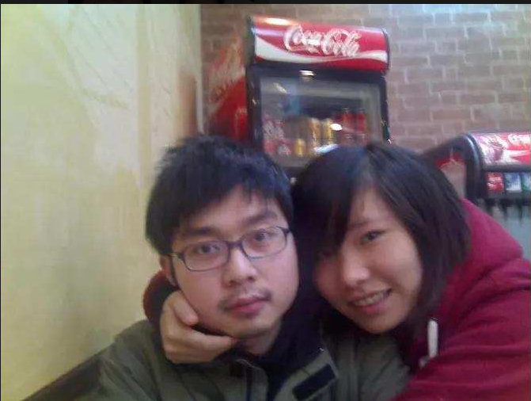
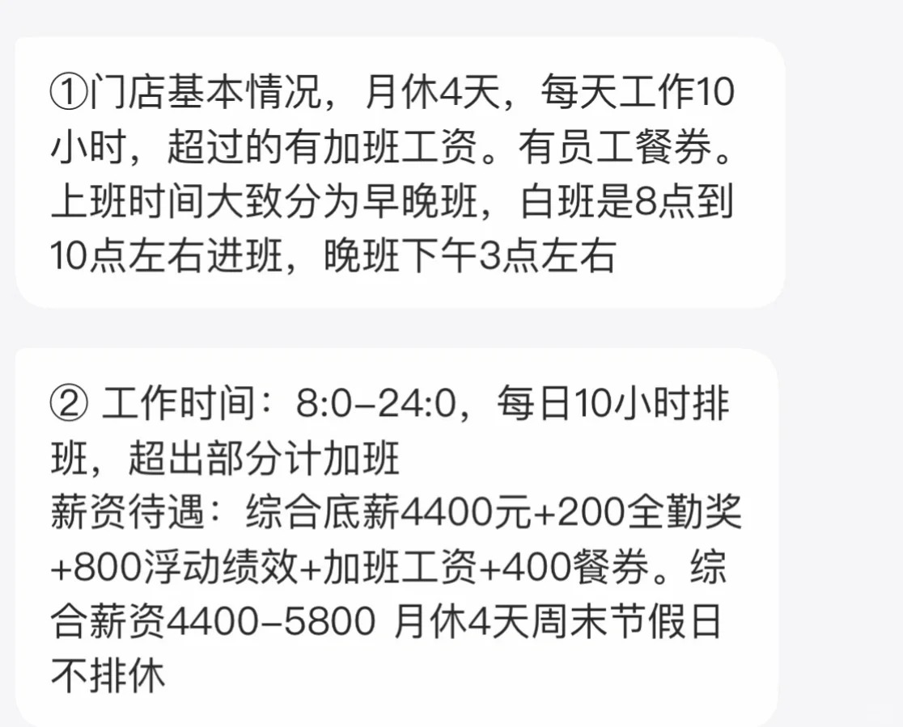

盛香亭餐饮的研究报告
盛香亭热卤品牌研究报告
盛香亭介绍


盛香亭是国内率先聚焦新式热卤的轻餐连锁品牌，2016年诞生于湖南长沙，由廖宗毅、李凌子夫妻联合创立，主打当日鲜卤、现卤现拌，以年轻化、标准化、高性价比的热卤产品快速占领市场。
品牌以“不负盛名，闻香识亭”为理念，将传统湘式热卤与现代餐饮管理结合，构建中央厨房、冷链配送、明档现制的全链路体系，主打虎皮凤爪、卤猪蹄、牛肉、藕片、豆干等产品，口味鲜香软糯，深受年轻群体喜爱。
盛香亭率先提出现卤现拌标准：每日新鲜卤制、拒绝隔夜卤水，顾客点单后现场拌制，从出锅到入口不超过5分钟，兼顾口感与食品安全。经过多年发展，门店覆盖全国多省市，获得腾讯等机构投资，成为热卤赛道头部品牌之一。
大股东列表:
- 绝味食品（通过深圳网聚投资）：11.5084%+间接 合计约 28.92%
- 廖宗毅直接持股：14.7085% ,夫妻二人直接 + 核心关联合计持股约 23.59%
- 腾讯（深圳市腾讯信息技术有限公司）：9.8324%
夫妻创始人采访（核心要点）
廖宗毅（创始人）：长沙人，初中 / 高中在长沙麓山国际学校，后去英国读大一，英国留学，加盟2006-2016过赛百味（Subway）赚了300万元，2016年创盛香亭品牌，擅长标准化体系搭建与供应链管理，强调“不做网红，要做长久的网绿品牌”，坚持用供应链与品控支撑长期发展。
李凌子（创始人兼CEO）：早年在长沙政法频道情感栏目记者，负责产品与运营管理，信奉“死磕产品与品质”，注重用户体验与门店精益管理，坚持不编造品牌故事，靠真实产品与口碑立足市场。
创业初心：发现传统热卤多为街边零散小店，缺乏品牌化、标准化运营，而年轻人对安全、便捷、好吃的热卤需求强烈，于是决定把街头热卤做成连锁品牌，让热卤成为正餐与休闲皆宜的选择。
经营理念：坚持透明化、健康化、年轻化，拒绝添加剂，严控食材新鲜度，用高性价比与稳定口味留住顾客，不靠营销噱头，靠产品复购支撑增长。

盛香亭联合创始人 廖宗毅、李凌子
采访的视频链接：
- https://v.douyin.com/qNEtgTcqdOk/ 2024年3月15日
- https://v.douyin.com/odV0JH7l7vw/ 2024年8月26日 40天培训，2次考核 供应链自己不生产，还是选品，追求质价比，不做网红，做网绿（常时间稳定输出），本人爱吃，爱陶瓷。
- https://v.douyin.com/GWftANy4oYs/ 2023年11月30日 廖宗毅英国留学，加盟了洋快餐 盛香亭55%毛利率，很难突破500家。翻台率9，知道年轻人需要什么？周周上新，坏店率控制在 5%。境由心转的理论，不要怪外部环境。用三禾集团的传送设备。英国照片 :
- https://v.douyin.com/k7I-NQolPvA/ https://v.douyin.com/MZQEbNPvt5A/ 2021年7月28日 李凌子演示卤料的制造过程。
媒体采访（核心报道）
多家财经与餐饮媒体对盛香亭进行深度报道，聚焦其模式创新、供应链与融资发展。
1. 模式创新：从传统档口店升级为转转热卤，回转台自选、按碟计价，适配一人食、快餐场景，提升效率与体验，被媒体称为热卤赛道的创新样本。
2. 供应链与品控：媒体肯定其中央厨房统一配卤、冷链直达、明档操作、打烊废弃机制，认为其标准化体系是快速扩张的关键，同时也指出加盟扩张下的品控一致性挑战。
3. 食品安全回应：针对过往门店问题，媒体记录其整改、巡检、透明化公示等措施，品牌表示持续强化品控，守住安全底线。
2024 年绝味再次投资 1200 万；2022 年 4 月转型，2023 年聚焦湖南、湖北、广东、江西四省发展。
员工店员绩效参考:

- 快餐思维重做转转火锅的新模型（2022.4 起）：转转小火锅 + 热卤融合，店型扩大到50–120㎡，吧台环形动线、一人一锅、自助取菜，正餐化、可久坐，人均 30–50 元。
https://v.douyin.com/XOrE2PWhhUc/ 1. 和转转小火锅差异化，做转转热卤,
2. 锅底也放在动线上面自取
3.所有的产品小量化改为小方盘视觉平面化
4. 店内大量文字说菜，增加菜的知识，减少服务员沟通成本 - https://mp.weixin.qq.com/s/8yXn3W-WevLCLzYLFHH8PA 陈彦如是辣卤品牌盛香亭的新媒体运营:现代年轻人追求个性的价值观,几乎一刻不停在维持着与网友的联系。她的日常工作除了编辑和发布活动文章，还包括管理线上的“小盛留声机”，这是盛香亭在公众号上开辟出来专门收集食客意见的渠道。陈彦如分析出互动最活跃的是18至30岁的女性，她们名字和头像很可爱，留言的口吻朝气活泼、轻松有趣，其中很多人甚至保持了长期互动,盛香亭通过小程序和公众号形成了一套完整的品牌营销+运营+客户反馈的线上经营模式
盛香亭门店负责人，爹爹阿姨那一辈的会更想尝试比较创新的小吃，例如虎皮鸡爪，既是卤味，又比较软糯，很适合他们,张胜男也有自己的心得,在客流爆棚的高峰期，要想更快速地引导食客，她必须尽一切可能提升餐厅的流动性 - https://mp.weixin.qq.com/s/S2wyDjZW3YQW8l6iA7wBdg 廖宗毅的妻子李凌子，做过长沙政法频道的记者，也就是现在的盛香亭创始人兼CEO李凌子。李凌子：安格斯牛肉做成卤牛肉，搭配桂林米粉，做出来的爆款。
标准化的核心还是供应链。只有稳定、可控、可追溯的供应链，才能达到市场对好吃、健康、标准化的新要求.
社区营销学
盛香亭以年轻社群运营为核心，构建线上线下一体化的社区营销体系，强化用户粘性与口碑传播。
• 线下社群：门店建立顾客群，推送新品、优惠、会员日活动，开展到店打卡、满减、套餐优惠，提升复购；商场店依托商圈客流，做场景化体验与口碑扩散。
• 线上内容：在抖音、小红书、微博等平台发布产品制作、探店、新品测评，鼓励用户UGC分享，发起菜品征集、话题互动，用年轻化内容触达目标群体。
• 会员体系：积分兑换、生日福利、会员专享价，提升用户留存；推出组合套餐、晚间优惠，平衡客流与食材损耗，增强社群活跃度。
• 场景渗透：地铁主题列车、城市联名活动，强化地域文化与品牌绑定，提升品牌好感度与曝光，形成“城市+品牌”的社群记忆点。
-
https://weixin.qq.com/sph/AdTW2W8bSL 2021年1月1日 说到三点，盛香亭在社区方面的创新 一，门店数据化，小程序点单，扫码。二，私域转化，公众号和小程序的沉淀会员做线上活动 伙伴券，员工券; 三，用户思维，开通留声机获取顾客的需求，小步试错。
-
品牌发展历程：盛香亭 2016 年成立，前身为盛香亭热卤，巅峰时有 400 多家店；2022 年因广州食品安全问题闭店至 200 多家，闭店率 50%；2019 年、2021 年分别获机构及腾讯、绝味旗下网聚的投资，2024 年绝味再次投资 1200 万；2022 年 4 月转型（放弃零售走食），2023 年聚焦湖南、湖北、广东、江西四省发展。
精准定位策略：主打麻辣烫升级版，客单价 30-40 元；设 8 种热卤小锅底，零售价 10 元、团购价 6.8 元；门店布局商场负一层快餐区一二线点位，采用明亮干净的新中式装修，符合年轻人审美。
单店运营数据：加盟费等累计 3.98 万元，标准门店 150 平，单店建设成本 150-170 万元；月营业额 18-30 万元，加盟商毛利 55%-60%，月净利润 4-5 万元，回本周期约 3 年。
优秀抖音达人链接案例: 关键字：盛香亭好在哪
- 长沙盛香亭隐藏吃法大合集！N刷总结！附调料攻略！ https://v.douyin.com/QcEUsGHglNU/ 5万互动
- 盛香亭隐藏吃法 附调料攻略！ https://v.douyin.com/-Sexun0OITw/ 4万互动
- 盛香亭教程攻略！ https://v.douyin.com/5JR5hQTQQvY/ 2万互动
- 盛香亭十周年！！！你的必吃是什么！ https://v.douyin.com/W4Bdlbvokjg/ 复制此链接 2万互动
- 一个人勇闯盛香亭DIY寿喜锅，这几个蘸料配方记得收藏 https://v.douyin.com/EClU-g2tx3k/ 复制此链接 2万互动
小红书达人链接案例:
- 【盛香亭激推，方便自己以后拿取餐品。https://www.xiaohongshu.com/discovery/item/69fda6720000000035021a90
- 【盛香亭吃不下5次给大家的建议。https://www.xiaohongshu.com/discovery/item/68bd5b07000000001d00f061
- 【盛香亭最新最全隐藏吃法！（N刷总结攻略）https://www.xiaohongshu.com/discovery/item/68f4e4750000000004028f4d
- 【服务员都看傻了‼️盛香亭隐藏吃法大公开 https://www.xiaohongshu.com/discovery/item/69bd2236000000001a0240a7
- 【盛香亭top1是什么！ https://www.xiaohongshu.com/discovery/item/69d91936000000002100544e
- 【点一份超级酷的周年庆礼物🎁你充值，我报销 - 盛香亭热卤https://www.xiaohongshu.com/discovery/item/69e59ddf0000000021004c27
存在缺点
- 1. 味道太大，身上都是味
- 2. 排队被倒卖，有些恶意排队
- 3. 补菜和肉类校少，素菜居多
- 4. 锅底一般、越吃越咸：
- 5. 卤肉饭肉少饭多：
借鉴的地方
- 目前还没有 公众号 / 小程序,要开始布局，让用户可以在官方留言→研发产品迭代
- 小程序：点单 / 储值 / 会员 / 意见反馈，消费后自动推送评价；
- 留言区：专人回复（24h 内），顾客提的口味 / 分量问题，一周内落地优化；参考https://www.wjx.cn/jq/113132367.aspx
- 私域福利：会员日 8 折、生日免锅底、拉新送小食，锁定高频客；
- 内容：真实探店、后厨透明、顾客好评，不夸大、不造假。
- 后厨明档 + 直播，顾客可见操作； 每店公示食材溯源 + 检测报告 + 卫生评分；
- 日常轻正餐 + 一人食社交 小红书 / 抖音全是真实探店，信任度回升 不做付费营销
- 数字化覆盖：点单、库存、损耗、会员、客诉，总部实时看单店数据，快速响应问题。